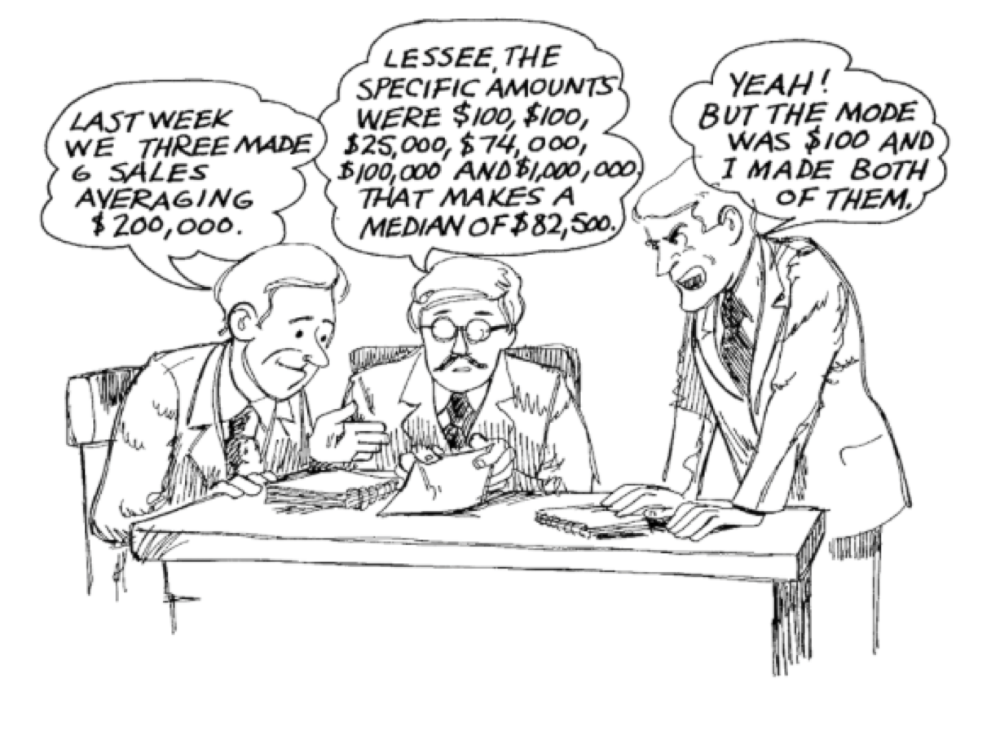

Tema 4 Descripción de datos cuantitativos
Los datos cuantitativos son los que expresan cantidades que se representan mediante números, tales como los resultados de contar objetos o individuos o de medir pesos, distancias, tiempos o concentraciones. Los datos cuantitativos admiten dos tipos de tratamiento, según trabajemos con los datos originales o brutos o los agrupemos en clases o intervalos. En este tema trataremos el primer caso, y en el próximo, el segundo.
4.1 Frecuencias
Como los números reales están ordenados de manera natural, para estudiar un vector de datos cuantitativos (una variable cuantitativa) podemos usar las frecuencias y las frecuencias acumuladas de sus diferentes valores, como en las variables ordinales, puesto que podemos ordenar los datos cuantitativos con el orden natural de los números reales. Esto solo es útil cuando en la muestra tenemos pocos valores diferentes.
| Sexo | Demencia Senil | Cáncer de mama | COVID-19 | Número de hijos | |
|---|---|---|---|---|---|
| 1 | Mujer | No | No | Leve | 4 |
| 2 | Mujer | Alzheimer | Sí | Leve | 1 |
| 3 | Hombre | Alzheimer | No | UCI | 8 |
| 4 | Mujer | Otros | No | Asintomática | 0 |
| 5 | Mujer | Alzheimer | No | Leve | 3 |
| 6 | Mujer | Otros | Sí | Hospitalización | 4 |
| 7 | Mujer | No | No | UCI | 2 |
| 8 | Mujer | Alzheimer | No | Leve | 1 |
| 9 | Hombre | Otros | No | Leve | 1 |
| 10 | Mujer | Otros | Sí | Leve | 2 |
| 11 | Hombre | Alzheimer | No | Leve | 6 |
| 12 | Hombre | Alzheimer | No | Hospitalización | 0 |
| 13 | Mujer | No | No | Leve | 0 |
| 14 | Mujer | No | No | Asintomática | 1 |
| 15 | Hombre | Alzheimer | No | Leve | 4 |
| 16 | Mujer | No | Sí | Asintomática | 2 |
| 17 | Mujer | No | No | Leve | 2 |
| 18 | Mujer | No | No | Hospitalización | 3 |
| 19 | Mujer | Alzheimer | No | Hospitalización | 6 |
| 20 | Hombre | No | No | Leve | 3 |
La tabla siguiente agrupa las diferentes tablas de frecuencias de los números de hijos de estos residentes:
| Número de hijos | Frec. absoluta | Frec. relativa | Frec. abs. acumulada | Frec.rel. acumulada |
|---|---|---|---|---|
| 0 | 3 | 0.15 | 3 | 0.15 |
| 1 | 4 | 0.20 | 7 | 0.35 |
| 2 | 4 | 0.20 | 11 | 0.55 |
| 3 | 3 | 0.15 | 14 | 0.70 |
| 4 | 3 | 0.15 | 17 | 0.85 |
| 6 | 2 | 0.10 | 19 | 0.95 |
| 8 | 1 | 0.05 | 20 | 1.00 |
Y a modo de ejemplo, los diagramas de barras de frecuencias relativas y frecuencias relativas acumuladas de estos números de hijos son:

Figura 4.1: Frecuencias relativas de los números de hijos en la muestra de pacientes de Covid-19 de una residencia geriátrica

Figura 4.2: Frecuencias relativas acumuladas de los números de hijos en la muestra de pacientes de Covid-19 de una residencia geriátrica
4.2 Medidas de tendencia central
Como los datos cuantitativos son números reales y tienen el significado de números reales, podemos operar con ellos. Esto nos aporta una multitud de estadísticos, expresiones matemáticas que, aplicadas a la variable, producen un valor que expresa alguna característica de la misma.
En primer lugar tenemos los estadísticos de tendencia central, que dan un valor representativo del conjunto de datos de la variable; las más importantes son:
La moda, que es el valor, o los valores, de máxima frecuencia (absoluta o relativa, tanto da).
La media aritmética, o valor medio: si los datos de que disponemos son \(x_1,\ldots,x_n\), su media es \[ \overline{x}=\frac{x_1+\cdots+x_n}{n} \]
La mediana \(Q_{0.5}\), que representa el valor central en la lista ordenada de observaciones y se define formalmente de la manera siguiente. Si denotamos por \[ x_{(1)}\leqslant x_{(2)}\leqslant\cdots \leqslant x_{(n)} \] los datos de la variable cuantitativa ordenados de menor a mayor:
- Si \(n\) es par, su mediana es la media de los dos datos centrales: \[ \frac{x_{(n/2)}+x_{(n/2+1)}}{2}. \]
- Si \(n\) es impar, su mediana es el dato central: \(x_{(n+1)/2}\).
En este curso, cuando hablemos de la media de unos datos nos referiremos siempre a su media aritmética. Hay otros tipos de media, como por ejemplo la media geométrica o la armónica, que no estudiaremos.
Ejemplo 4.2 Tomemos la variable “Hijos” de la Tabla ??:
4, 1, 8, 0, 3, 4, 2, 1, 1, 2, 6, 0, 0, 1, 4, 2, 2, 3, 6, 3
En su tabla de frecuencias vemos que la moda son los valores 1 y 2, que empatan en la frecuencia máxima.
Su media es \[ \frac{4+1+8+0+3+4+2+1+1+2+6+0+0+1+4+2+2+3+6+3}{20}=2.65 \]
Para calcular su mediana, lo primero que hacemos es ordenar de menor a mayor las observaciones, y marcamos su posición dentro del conjunto ordenado:
| Posición | 1 | 2 | 3 | 4 | 5 | 6 | 7 | 8 | 9 | 10 | 11 | 12 | 13 | 14 | 15 | 16 | 17 | 18 | 19 | 20 |
| Valor | 0 | 0 | 0 | 1 | 1 | 1 | 1 | 2 | 2 | 2 | 2 | 3 | 3 | 3 | 4 | 4 | 4 | 6 | 6 | 8 |
Como tenemos 20 datos, la mediana será la media aritmética de sus dos valores centrales, los de las posiciones 10 y 11: \(Q_{0.5}=(2+2)/2=2\).
Ejemplo 4.3 ¿Qué les pasa a estos estadísticos si eliminamos el paciente con 8 hijos de la muestra? Las observaciones son ahora
4, 1, 0, 3, 4, 2, 1, 1, 2, 6, 0, 0, 1, 4, 2, 2, 3, 6, 3
La moda siguen siendo los valores 1 y 2, ya que no hemos modificado sus frecuencias y hemos eliminado observaciones
Su media ahora es \[ \frac{4+1+0+3+4+2+1+1+2+6+0+0+1+4+2+2+3+6+3}{19}=2.37 \]
Como ahora tenemos 19 observaciones, su mediana será la observación central, es decir, la décima, tras ordenarlas de menor a mayor:
| Posición | 1 | 2 | 3 | 4 | 5 | 6 | 7 | 8 | 9 | 10 | 11 | 12 | 13 | 14 | 15 | 16 | 17 | 18 | 19 |
| Valor | 0 | 0 | 0 | 1 | 1 | 1 | 1 | 2 | 2 | 2 | 2 | 3 | 3 | 3 | 4 | 4 | 4 | 6 | 6 |
Por lo tanto, \(Q_{0.5}=2\).
Ejemplo 4.4 ¿Y qué les pasaría a estos estadísticos si, en la muestra original, hubiéramos cometido un error y al último paciente le hubiéramos anotado 300 hijos en lugar de 3?
4, 1, 8, 0, 3, 4, 2, 1, 1, 2, 6, 0, 0, 1, 4, 2, 2, 3, 6, 300
La moda no se modifica
La media ahora sería \[ \frac{4+1+8+0+3+4+2+1+1+2+6+0+0+1+4+2+2+3+6+300}{20}=17.5 \]
Como volvemos a tener 20 números, la mediana sería otra vez la media de las observaciones décima y undécimo tras ordenarlas de menor a mayor:
Posición
1
2
3
4
5
6
7
8
9
10
11
12
13
14
15
16
17
18
19
20
Valor
0
0
0
1
1
1
1
2
2
2
2
3
3
4
4
4
6
6
8
30
De nuevo, \(Q_{0.5}=(2+2)/2=2\).
Es importante observar que, como ilustra el chiste siguiente,
La moda es el valor más repetido, pero puede ser poco representativa
La media es poco robusta, en el sentido de que los valores extremos pueden afectarla mucho, pero matemáticamente es más tratable
La mediana es muy robusta, en el sentido de que los valores extremos la afectan poco, pero difícil de manejar matemáticamente

Por este motivo, por ejemplo, a la hora de resumir los salarios españoles, se publican los tres valores:
Figura 4.3: Gráfico publicado por INE (https://www.ine.es/prensa/eces_2018_a.pdf)
Es interesante copiar un trozo de la nota de prensa de la que hemos extraído este gráfico:
"El salario bruto medio anual en España fue de 24.009,12 euros por trabajador en el año en el año 2018, un 1,5% mayor al año anterior. La diferencia entre este salario medio y el salario más frecuente o modal (de 18.468,93 euros) fue de más de 5.500 euros. Esto significa que había pocos trabajadores con salarios muy altos pero que influyeron notablemente en el salario medio.
“Por otra parte, el salario mediano (que divide al número de trabajadores en dos partes iguales, los que tienen un salario superior y los que tienen un salario inferior) presentó un valor de 20.078,44 euros en 2018.”
4.3 Medidas de posición
Las medidas de posición dividen la variable en unas determinadas proporciones; los valores que determinan estas posiciones reciben el nombre de cuantiles. En este sentido, la mediana es también una medida de posición, puesto que divide la variable en dos mitades.
Dada una proporción \(0<p<1\), el cuantil de orden \(p\) de una variable cuantitativa, que denotaremos por \(Q_p\), es el valor más pequeño tal que su frecuencia relativa acumulada es mayor o igual que \(p\). En otras palabras, si tenemos un conjunto de datos \(x_1, \ldots, x_n\) y los ordenamos de menor a mayor, \[ x_{(1)}\leqslant x_{(2)}\leqslant\cdots \leqslant x_{(n)}, \] entonces \(Q_p\) es el primer valor \(x_{(i)}\) que deja a su izquierda (incluyéndolo a él) como mínimo la fracción \(p\) de los datos, es decir, \(p\cdot n\) datos.
La excepción a esta regla es el cuantil \(Q_{0.5}\), que es la mediana y se calcula como hemos explicado antes.
| Posición | 1 | 2 | 3 | 4 | 5 | 6 | 7 | 8 | 9 | 10 | 11 | 12 | 13 | 14 | 15 | 16 | 17 | 18 | 19 | 20 |
| Valor | 0 | 0 | 0 | 1 | 1 | 1 | 1 | 2 | 2 | 2 | 2 | 3 | 3 | 3 | 4 | 4 | 4 | 6 | 6 | 8 |
Entonces:
El cuantil de orden 0.2, \(Q_{0.2}\), es el primer elemento en esta lista ordenada que es mayor o igual que, como mínimo, el 20% de los datos. Como el 20% de 20 es 4, es el cuarto elemento de la lista ordenada: 1
El cuantil de orden 0.75, \(Q_{0.75}\), es el primer elemento en esta lista ordenada que es mayor o igual que, como mínimo, el 75% de los datos. Como el 75% de 20 es 15, es el décimoquinto elemento de la lista ordenada: 4
El cuantil de orden 1/3, \(Q_{1/3}\), es el primer elemento en esta lista ordenada que es mayor o igual que, como mínimo, un tercio de los datos. Como un tercio de 20 es 6.66 y pico, es el séptimo elemento de la lista ordenada: 1
De hecho, la definición que hemos dado de cuantil es “orientativa”: no hay un consenso sobre cómo calcular cuantiles de una muestra (salvo la mediana), de manera que se han propuesto varios métodos que pueden dar resultados diferentes; podéis consultar nueve de estos métodos en la entrada sobre cuantiles de la Wikipedia en inglés. La razón de esta diversidad es que el objetivo final del cálculo de cuantiles puede no ser solo encontrar el primer valor cuya frecuencia relativa acumulada en la variable sea mayor o igual que \(p\), sino también estimar qué vale este valor para el total de la población.
¿Qué haremos nosotros?
- Si calculamos cuantiles a mano, usaremos la definición que hemos dado
- Si los calculamos con algún paquete estadístico, usaremos su método por defecto (que seguramente no sea el que hemos explicado)
Algunos cuantiles con nombre propio:
La mediana es el cuantil \(Q_{0.5}\).
Los cuartiles son los cuantiles \(Q_{0.25}\), \(Q_{0.5}\) y \(Q_{0.75}\), y reciben, respectivamente, los nombres de primer cuartil, segundo cuartil (o mediana) y tercer cuartil. \(Q_{0.25}\) será, pues, el menor valor que es mayor o igual que una cuarta parte de los datos, y \(Q_{0.75}\), el menor valor que es mayor o igual que tres cuartas partes de los datos.
Los deciles son los cuantiles \(Q_{p}\) con \(p\) un múltiplo entero de 0.1: el primer decil es \(Q_{0.1}\), el segundo decil es \(Q_{0.2}\), y así sucesivamente.
Los percentiles son los cuantiles \(Q_{p}\) con \(p\) un múltiplo entero de 0.01.
Se llama intervalo intercuartílico al par \((Q_{0.25},Q_{0.75})\).
Aquí tenéis una muestra de 14 niveles de glucosa medidos en niños en ayunas:
56, 60, 62, 63, 63, 65, 65, 66, 66, 66, 66, 68, 70, 72
Calculad su:
Moda:
Media:
Mediana:
Primer y tercer cuartiles: